没错，
周五的晚上，国庆的前夕
上周的头马会议如期的召开
本该在旅途的我们相聚在头马会议。。。。
上周的话题却是---旅行的意义！
“你看过里许多美景，
也看过了许多米女
你迷失在....”（哎呀，谁扔的板砖？）
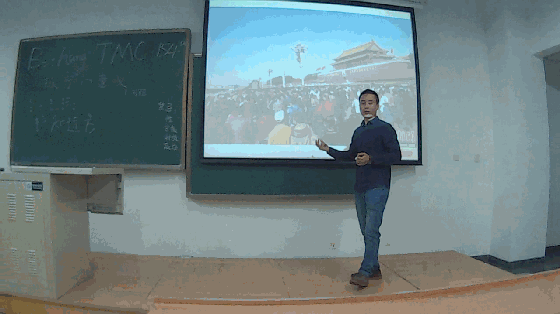
火山永远是那么的---学术！没错，一上来就给你来个分类讨论，这严谨也是没谁了！
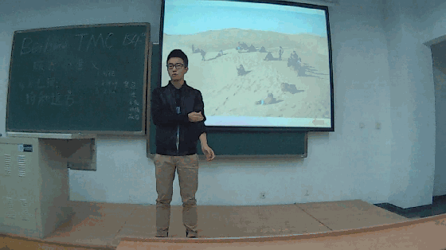
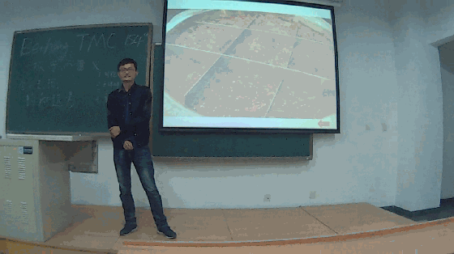
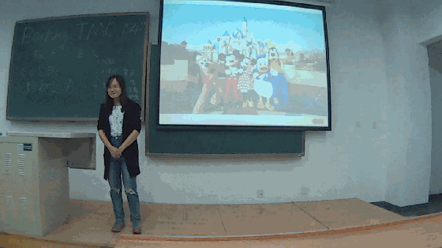
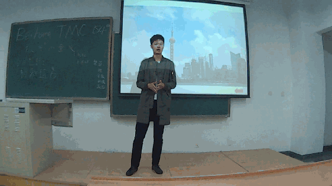
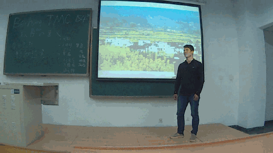
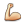
没错，不仅来展示英语，也可以上台秀肌肉的！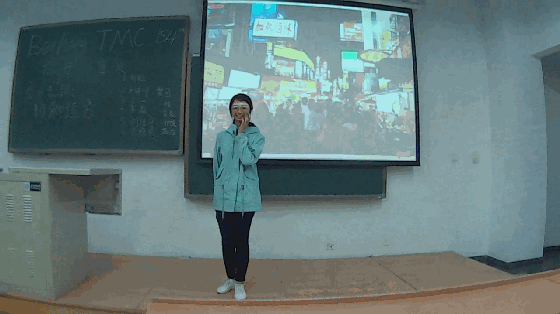
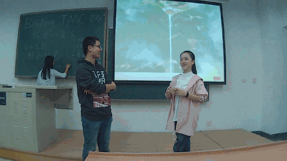
 ，不得不说我们二姐已经对任何角色都能很好的把控了，二姐赛高！
，不得不说我们二姐已经对任何角色都能很好的把控了，二姐赛高！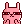
首先非常感谢我琪的精心准备的辣么多的题目啊~~本期的TT环节呢，虽然是在一个本该去旅行的日子里坐在教室讨论旅行的意义有点不太合适，但并不是所有人都有个合适的伴侣，并不是每个人有充足的旅费，并不是每个人都有一个渴望远足的心，只要有一个理由说服你自己，哪怕是坐在教室里哪里也没去也不必觉的惋惜，你可以围着操场跑一圈，你可以拿起书本品味下书海畅游的乐趣，你可以看一部好的电影，一部最佳的动漫，一首动人的歌，仅此而已也足够了吧。（原谅宅在宿舍的小编这么为戚戚冷冷凄凄的中文会议的米娜桑们洗了一地，希望大家都可以找到让自己不宅的方法，宅的理由！）最后希望大家外出的时候玩的愉快，注意安全~~

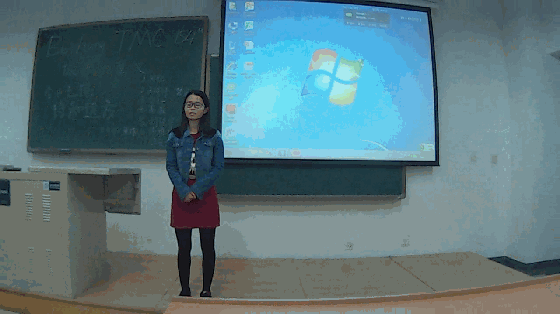
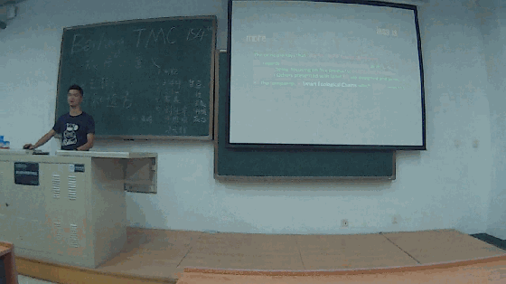
（下次记得不要超时哦~~）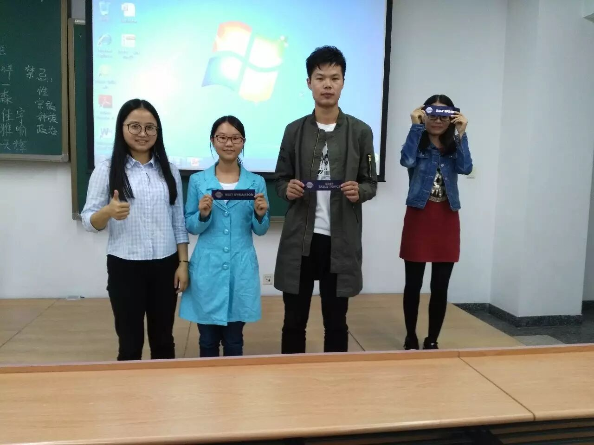

TT-francis---链接：http://pan.baidu.com/s/1hsmagQg 密码：ssi0
TT-amy&&pedro---链接：http://pan.baidu.com/s/1b8WK38 密码：as0k
TT-flair--链接：http://pan.baidu.com/s/1cf0MLK 密码：ihmp
TT-刘佳宇---链接：http://pan.baidu.com/s/1miIvZuS 密码：9q9i
TT-许雅喻---链接：http://pan.baidu.com/s/1mhEIawS 密码：k1bx
TT-mike---链接：http://pan.baidu.com/s/1o8IrWqY 密码：fab2
TT-yeager---链接：http://pan.baidu.com/s/1kU5q95H 密码：6t24
TT-火山---链接：http://pan.baidu.com/s/1slrNySd 密码：hgaz
CC-freshen---链接：http://pan.baidu.com/s/1nu9WoyP 密码：j6xn
CC-brittney---链接：http://pan.baidu.com/s/1gfDg6QJ 密码：5z7o

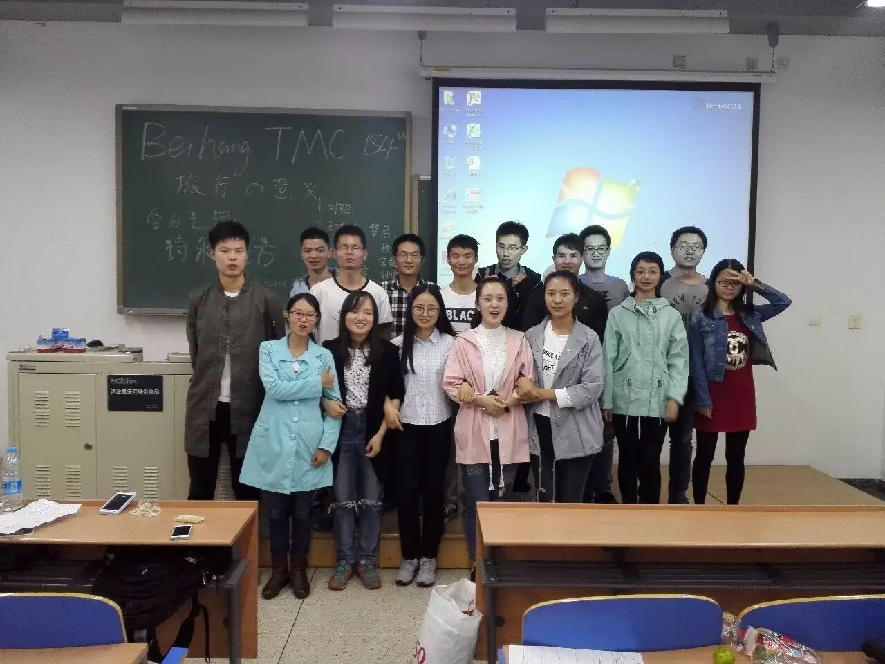
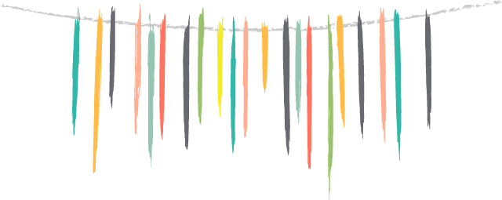

https://mp.weixin.qq.com/s/VcxsujKGhB63FMlmfjYp9w
本页为抢救式本地归档，图文已永久保存。